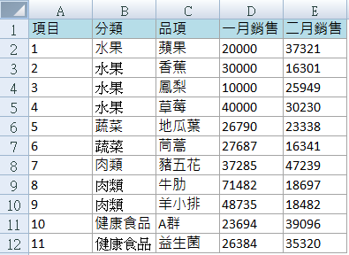
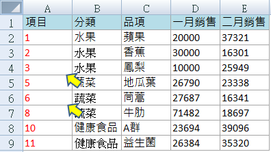
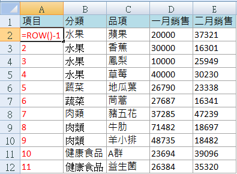
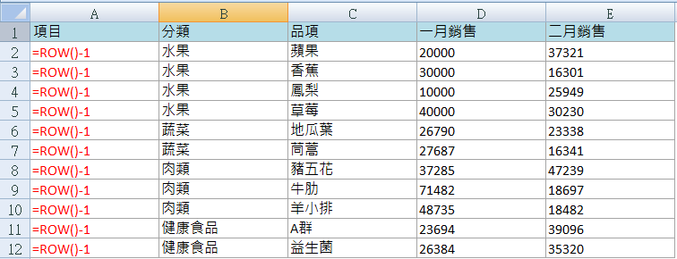
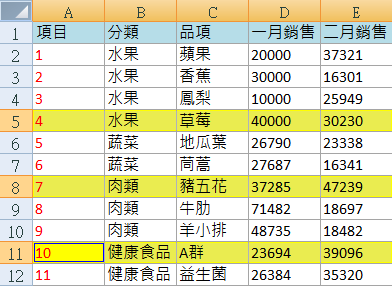
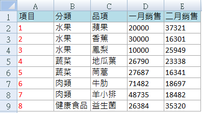

豪拜兒|Excel教學：使用ROW()和COLUMN()函數自動更新刪除行列後的連續序號

是不是曾經遇過好不容易編排好的序號，卻因為刪除了某行列，又要重新編排一次的麻煩事呢？
在日常的 Excel 使用中，我們經常會遇到這樣的情況：需要頻繁刪減表格中的行列，而原本編排好的序號或行列數字突然不再連貫。例如，你可能已經設定了 A 列的序號從 1 到 11，但當你刪除其中的某些行時，這些序號就會出現斷裂，變得不再連續。這樣的情況下，不僅影響數據的美觀性和可讀性，更可能導致後續數據處理的混亂。
這種情況下，手動重新編排序號既耗時又容易出錯，尤其是當數據量較大時。為了解決這個問題，我們可以利用 Excel 中的 ROW() 和 COLUMN() 函數，來實現自動更新刪除行列後的連續序號。這樣一來，即使刪除了某些行列，序號也能自動保持連貫，不需要手動重新調整。
解決方法：使用 ROW() 和 COLUMN() 函數
原本的表格欄 A 的序號依序是 1~11 的連續數字

如果刪除了部分橫列，將導致序號變得不連貫
當你刪除 A 列中的中間幾行後，原來的 1 到 11 的序號就會出現斷裂，變成不連續的數字。這種情況下，需要一種自動化的方式來重新排列這些序號，使它們保持連貫性。

使用 ROW() 函數來動態生成序號
為了解決這個問題，我們可以利用 Excel 中的 ROW() 函數。這個函數可以自動抓取當前儲存格所在的行數。例如，如果你希望 A 列從第二行開始依次編號，你可以在 A2 儲存格輸入公式 =ROW()-1。這樣做的目的是扣除標題行，讓序號從 1 開始連續編排。

使用自動填充功能來快速應用公式
Excel 的自動填充功能非常強大，可以輕鬆地將公式應用到多個儲存格中。當你在 A2 儲存格輸入了 =ROW()-1 後，只需將滑鼠游標移動到儲存格右下角的小方塊，雙擊或拖動即可快速填充到 A 列的其他儲存格中，完成自動序號更新。
切換成公式模式來查看結果
切換到 Excel 的公式模式，你會看到 A 列所有儲存格的公式都變成了 =ROW()-1，這樣就確保了序號的連續性和準確性。。
!
實驗一下，將黃色的部分刪除
為了測試這種方法的有效性，你可以刪除 A 列中的某些行。即使刪除了這些行，你會發現 A 列的序號仍然保持連續，沒有出現斷裂或者不連續的情況。

使用 COLUMN() 函數處理欄數序號
類似地，如果你需要在其他欄位中處理欄數的序號，可以使用 =COLUMN() 函數來達到同樣的效果。這樣可以讓你在刪減列時，自動調整所有欄位的序號，確保它們始終保持正確和連續。

這種方法不僅節省了重新編排序號的時間，還使得你的表格管理更加有效和易於維護。希望這些技巧能夠幫助你更好地應對日常的 Excel 表格操作！
心得
為什麼需要學習 Excel？
學習 Excel 不僅能夠提升數據處理和分析能力，還能顯著提高工作效率。無論是進行基本的數據整理，還是進階的數據分析，Excel 都是不可或缺的工具。掌握 Excel，將能夠提升工作效率，通過快捷鍵和自動化功能，減少重複性工作。此外，將增強數據分析能力，使用各種公式和圖表，輕鬆分析和展示數據。熟練掌握 Excel 也能增加就業競爭力，這是許多職位的基本要求，尤其是在財務、數據分析和行政等領域。
系統地學習 Excel
如果想要更系統地學習 Excel，或是希望進一步提升自己的 Excel 技能，可以參考以下學習資源：在 Hahow 平台上，可以找到許多優質的 Excel 課程，推薦以下初級和進階課程，從基礎開始，逐步深入掌握各種實用技巧。
為什麼選擇 Hahow 線上課程平台？
Hahow 是一個受歡迎的線上課程平台，提供各種專業課程。選擇 Hahow，可以享受靈活的學習方式，隨時隨地都可以學習，非常適合忙碌的工作人士。平台上的課程由專業講師授課，內容豐富且實用。還可以與其他學員交流學習心得，共同進步。相比坊間動輒上萬元的課程，Hahow 的線上課程不僅省去交通的舟車勞頓，更有價格實惠的絕對優勢。
不要錯過這個提升自我的機會，立即註冊 Hahow，為職業生涯加分！
-
點擊圖片前往 Hohow，學習更多線上課程